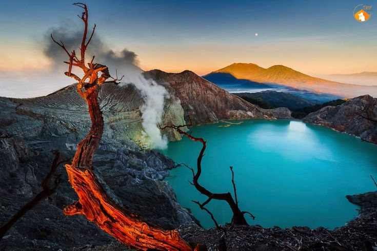
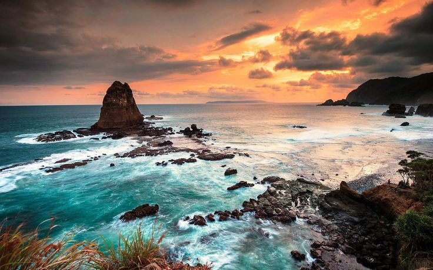
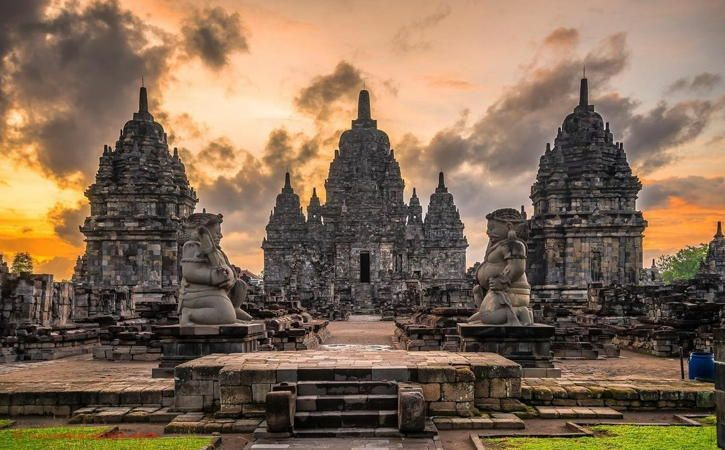
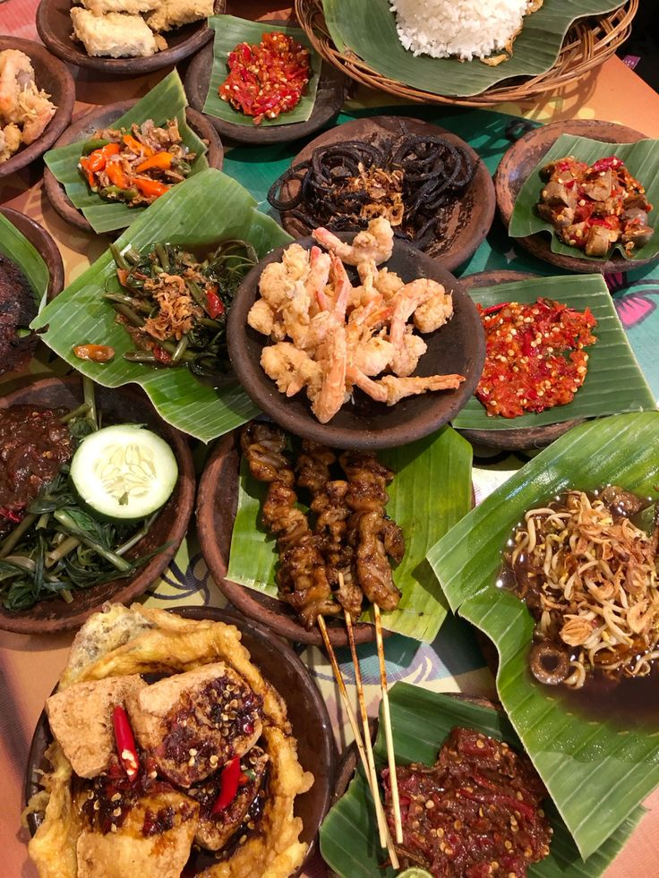
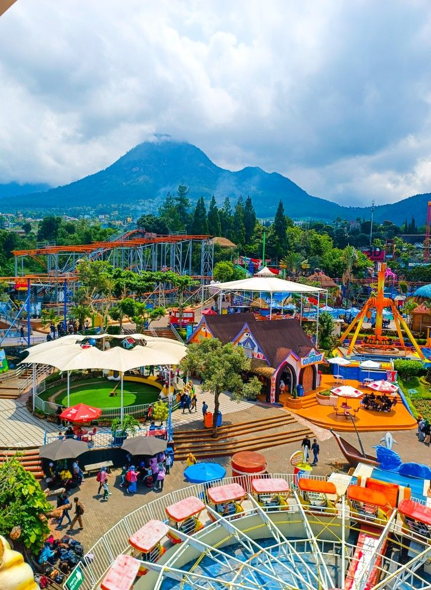
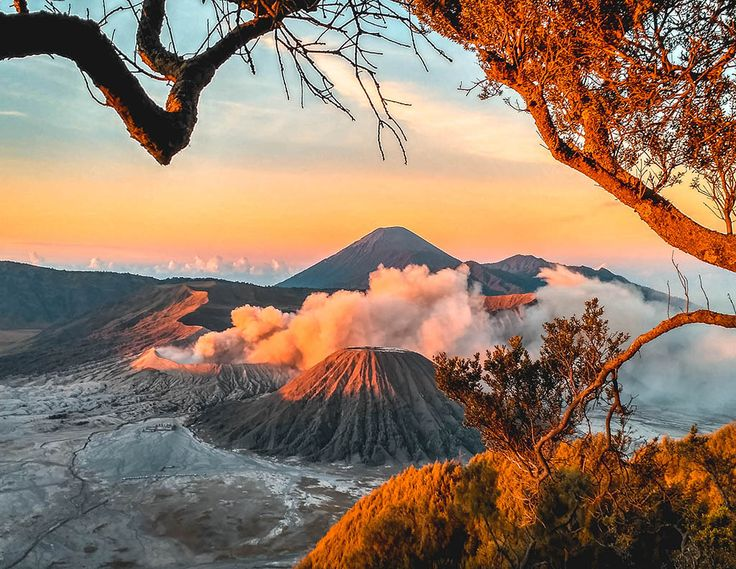

Panduan Lengkap Liburan ke Gunung Bromo
Tips dan informasi penting yang perlu kamu ketahui sebelum menjelajahi Bromo.
Jelajahi pesona Jawa Timur, dari pegunungan yang menakjubkan hingga pantai yang memukau.
Jelajahi Sekarang →Semua wisata
Jawa Timur
Temukan berbagai destinasi menarik di seluruh Jawa Timur.
Informasi wisata yang membantu perjalananmu lebih mudah.
Pilihan tempat wisata menarik untuk berbagai jenis perjalanan.
Cari dan temukan tempat baru dengan lebih praktis.
Temukan tempat-tempat menarik di Jawa Timur yang cocok untuk petualanganmu berikutnya.
 Populer
Populer
Nikmati keindahan sunrise dan lautan pasir di kawasan Bromo.

GunungPesona kawah vulkanik dengan pemandangan alam yang unik.
.jpg) Air Terjun
Air Terjun
Air terjun megah yang dikelilingi panorama pegunungan hijau.

PantaiPantai dengan pasir putih dan panorama laut yang menawan.
Temukan pengalaman yang sesuai dengan gaya perjalananmu.
Petualangan & panorama alam
Pasir putih & laut yang indah
Segarnya alam Jawa Timur

Tradisi & warisan Nusantara

Rasa khas Jawa Timur

Liburan seru bersama keluarga
Temukan tips, rekomendasi, dan inspirasi untuk perjalananmu di Jawa Timur.

PanduanTips dan informasi penting yang perlu kamu ketahui sebelum menjelajahi Bromo.
Kenali daya tarik Kawah Ijen dan persiapkan perjalananmu dengan lebih baik.
Dari makanan tradisional hingga kuliner populer, temukan cita rasa khas Jawa Timur.
.jpg)
Saksikan matahari terbit yang memukau dan nikmati panorama pegunungan yang menjadi salah satu ikon Jawa Timur.
Temukan berbagai destinasi dan pengalaman menarik yang tersebar di seluruh Jawa Timur.
Tempat wisata pilihan
Di seluruh Jawa Timur
Menjelajahi website kami
Kepuasan pengguna